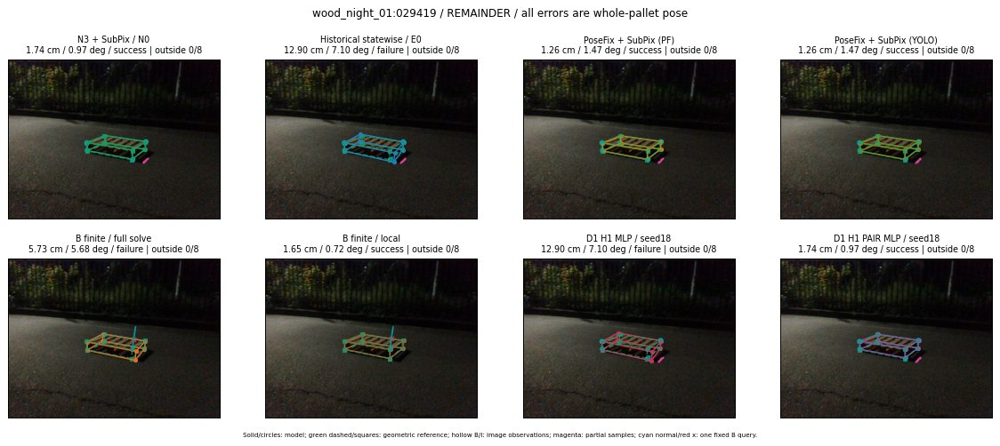

Whole-pallet pose errors; reference is a fixed geometric annotation, not certified physical GT.

Scores are uncalibrated logits. N0 retention is a numerical pose alias; it differs from H0 none or B fallback. B/I and profiles in baseline/B panels are original observations; L panels use new D1 observations. Only one deterministic supported B query is shown in a thumbnail; full support counts are below. Grey privacy rectangles edit the display copy only and are unrelated to O states; all observations were measured on original pixels. Thumbnails use JPEG quality85; detailed scientific panels are PNG.
| Method | Whole pose / cm, deg | Actual source | Selected ID | Score | Archived candidates | Eligible | N0 retained | H0 none | Fallback | Finite profiles |
|---|---|---|---|---|---|---|---|---|---|---|
| Raw YOLO + F | 2.29 cm / 1.84 deg / success | OTHER | None | N/A | N/A | N/A | False | N/A | None | N/A |
| N3 + SubPix / N0 | 1.74 cm / 0.97 deg / success | N0 | None | N/A | N/A | N/A | True | N/A | None | N/A |
| Historical statewise / E0 | 12.90 cm / 7.10 deg / failure | E0_REGENERATED | None | N/A | N/A | N/A | False | N/A | False | N/A |
| PoseFix raw | 2.47 cm / 1.39 deg / success | OTHER | None | N/A | N/A | N/A | False | N/A | None | N/A |
| PoseFix + SubPix (PF) | 1.26 cm / 1.47 deg / success | OTHER | None | N/A | N/A | N/A | False | N/A | False | historical support records 9; finite audit N/A |
| PoseFix + SubPix (YOLO) | 1.26 cm / 1.47 deg / success | OTHER | None | N/A | N/A | N/A | False | N/A | False | historical support records 9; finite audit N/A |
| Historical L, seed18 | 1.74 cm / 0.97 deg / success | N0 | N0 | N/A | 55 | 55 | True | True | True | N/A |
| Historical B fixed bank | 12.90 cm / 7.10 deg / failure | E0_REGENERATED | G13/ORIGINAL_WD/sample/0 | N/A | N/A | N/A | False | N/A | False | N/A |
| Historical B full | 6.92 cm / 5.83 deg / failure | OTHER | NEW/B/ORIGINAL_WD/h0/G13/ORIGINAL_WD/sample/0/PROPOSED_NATIVE_YAW_0 | N/A | N/A | N/A | False | N/A | False | N/A |
| Historical edge full | 22.48 cm / 17.69 deg / failure | OTHER | NEW/edge/ORIGINAL_WD/h0/G13/ORIGINAL_WD/sample/0/PROPOSED_NATIVE_YAW_0 | N/A | N/A | N/A | False | N/A | False | N/A |
| Historical AB full | 6.92 cm / 5.83 deg / failure | OTHER | NEW/AB/ORIGINAL_WD/h0/G13/ORIGINAL_WD/sample/0/PROPOSED_NATIVE_YAW_0 | N/A | N/A | N/A | False | N/A | False | N/A |
| B finite / fixed bank | 12.90 cm / 7.10 deg / failure | E0_REGENERATED | G13/ORIGINAL_WD/sample/0 | N/A | N/A | N/A | False | N/A | False | 23/23 |
| B finite / full solve | 5.73 cm / 5.68 deg / failure | OTHER | NEW_FINITE/B/ORIGINAL_WD/h0/G13/ORIGINAL_WD/sample/0/PROPOSED_NATIVE_YAW_0 | N/A | N/A | N/A | False | N/A | False | 23/23 |
| B finite / local | 1.65 cm / 0.72 deg / success | OTHER | NEW_FINITE/B/ORIGINAL_WD/h0/N0_LOCAL_SAME_PHYSICAL_POSE/ORIGINAL_WD | N/A | N/A | N/A | False | N/A | False | 23/23 |
| Edge finite / full solve | 56.08 cm / 81.46 deg / failure | OTHER | NEW_FINITE/edge/SWAPPED_WD/h0/G13/SWAPPED_WD/sample/0/PROPOSED_NATIVE_YAW_0 | N/A | N/A | N/A | False | N/A | False | 23/23 |
| D0 H0 MLP / seed18 | 1.74 cm / 0.97 deg / success | N0 | N0 | 3.046708106994629 | 18 | 18 | True | True | True | N/A |
| D0 H0 MLP / seed19 | 1.74 cm / 0.97 deg / success | N0 | N0 | 4.158057689666748 | 18 | 18 | True | True | True | N/A |
| D0 H0 MLP / seed20 | 1.74 cm / 0.97 deg / success | N0 | N0 | 0.4756569564342499 | 18 | 18 | True | True | True | N/A |
| D0 H1 MLP / seed18 | 12.90 cm / 7.10 deg / failure | E0_REGENERATED | E0_REGENERATED | -1.8220101594924927 | 18 | 18 | False | False | False | N/A |
| D0 H1 MLP / seed19 | 12.90 cm / 7.10 deg / failure | E0_REGENERATED | E0_REGENERATED | -2.542170524597168 | 18 | 18 | False | False | False | N/A |
| D0 H1 MLP / seed20 | 12.90 cm / 7.10 deg / failure | E0_REGENERATED | E0_REGENERATED | -3.1978001594543457 | 18 | 18 | False | False | False | N/A |
| D1 H0 MLP / seed18 | 1.74 cm / 0.97 deg / success | N0 | N0 | 7.259551048278809 | 18 | 18 | True | True | True | N/A |
| D1 H0 MLP / seed19 | 1.74 cm / 0.97 deg / success | N0 | N0 | 7.629129886627197 | 18 | 18 | True | True | True | N/A |
| D1 H0 MLP / seed20 | 1.74 cm / 0.97 deg / success | N0 | N0 | 7.368756294250488 | 18 | 18 | True | True | True | N/A |
| D1 H1 MLP / seed18 | 12.90 cm / 7.10 deg / failure | E0_REGENERATED | E0_REGENERATED | -1.2651957273483276 | 18 | 18 | False | False | False | N/A |
| D1 H1 MLP / seed19 | 12.90 cm / 7.10 deg / failure | E0_REGENERATED | E0_REGENERATED | -1.445632815361023 | 18 | 18 | False | False | False | N/A |
| D1 H1 MLP / seed20 | 12.90 cm / 7.10 deg / failure | E0_REGENERATED | E0_REGENERATED | -1.8885318040847778 | 18 | 18 | False | False | False | N/A |
| D1 H1 ROLE AFFINE / seed18 | 1.74 cm / 0.97 deg / success | N0 | N0 | -0.963590681552887 | 18 | 18 | True | False | False | N/A |
| D1 H1 ROLE AFFINE / seed19 | 1.74 cm / 0.97 deg / success | N0 | N0 | -0.32274743914604187 | 18 | 18 | True | False | False | N/A |
| D1 H1 ROLE AFFINE / seed20 | 1.74 cm / 0.97 deg / success | N0 | N0 | -0.7407392859458923 | 18 | 18 | True | False | False | N/A |
| D1 H1 PAIR MLP / seed18 | 1.74 cm / 0.97 deg / success | N0 | N0 | -1.3907324075698853 | 18 | 2 | True | False | False | N/A |
| D1 H1 PAIR MLP / seed19 | 1.74 cm / 0.97 deg / success | N0 | N0 | -1.2305651903152466 | 18 | 2 | True | False | False | N/A |
| D1 H1 PAIR MLP / seed20 | 1.74 cm / 0.97 deg / success | N0 | N0 | -0.7446606159210205 | 18 | 2 | True | False | False | N/A |
| D1 H1 PAIR ROLE AFFINE / seed18 | 1.74 cm / 0.97 deg / success | N0 | N0 | -0.654340922832489 | 18 | 2 | True | False | False | N/A |
| D1 H1 PAIR ROLE AFFINE / seed19 | 1.74 cm / 0.97 deg / success | N0 | N0 | -0.43265146017074585 | 18 | 2 | True | False | False | N/A |
| D1 H1 PAIR ROLE AFFINE / seed20 | 1.74 cm / 0.97 deg / success | N0 | N0 | -0.5889346599578857 | 18 | 2 | True | False | False | N/A |
| Regenerated common E0 | 12.90 cm / 7.10 deg / failure | E0_REGENERATED | E0_REGENERATED | N/A | N/A | N/A | False | N/A | False | N/A |